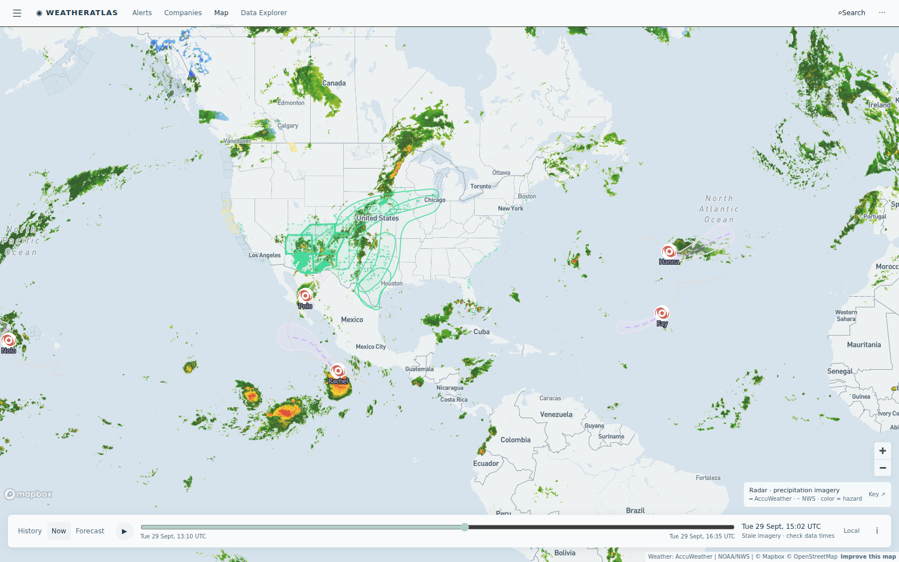

Daily severe-weather intelligence for LNG, refining, offshore, and terminal operators.

Live radar + alerts, 29 Sept ~14:30 UTC. The stalled central-US corridor carries the day's flash-flood flags; a Gale Warning remains on Puget Sound's northern inland waters; tropical systems (Fay, Hanna in the Atlantic; Nolo, Polo, Rachel in the East Pacific) all remain weak or over open water — no US land threat. Interactive radar + hurricane tracker: accuweather.taborlin.co.
| System | Status | Energy-asset impact |
|---|---|---|
| Central-US flash-flood corridor (KS/OK/NE/IA/IL) | ACTIVE — Day 4 | AccuWeather severe-potential flash-flood flags persist on refineries and fertilizer plants across the corridor while NWS stays silent at several — rail logistics, drainage and containment checks continue |
| Puget Sound Gale Warning | ACTIVE | Gale Warning on northern inland waters including the San Juan Islands — marine wind gates on Anacortes-area crude docks again tonight |
| Southwest "hybrid storm" (developing) | FORMING | Tropical moisture surge over the Southwest into the central US midweek — days of heavy rain potential extending the saturated corridor; Permian and Midcon logistics watch window opens Wed-Fri |
| TD Fay / TD Hanna (Atlantic) · Nolo / Polo / Rachel (E Pacific) | OPEN WATER | All weak or offshore — no landfall signal; elevated seas on Baja shipping lanes; daily track checks continue at statistical season peak |
Corridor day four is where alert lead time pays: the flag that arrives hours before the watch is the one that lets a site pre-stage pumps and re-sequence rail. The per-asset briefs below embed the same-hour AccuWeather enterprise vs free-API comparison, refreshed daily:
Evening t-storm window returns — AccuWeather carries the 9-10 PM signal the free feed misses entirely.
View live brief →Day 4 of the flash-flood corridor: flags live at the refinery and the adjacent fertilizer plant while the free feed says dry.
View live brief →Second gale night: gust build into the evening gates crude-dock windows on Fidalgo Bay.
View live brief →Flash-flood flags brush the Cushing corridor — tank-farm drainage and pipeline ROW checks continue.
View live brief →